IMEM.IO: TWITTER VISUALIZATION
I interned at Systems and Technology Research (STR) as a software developer intern. I worked with two other Olin interns to commercialize STR's tweet-grouping technology, originally developed for DARPA intelligence analysts. We did everything from identifying users, designing and implementing a new UI and backend tweaks, conducting usability tests all the way to handling marketing and customer relations.
imem.io, live
Project documentation
Competitor research
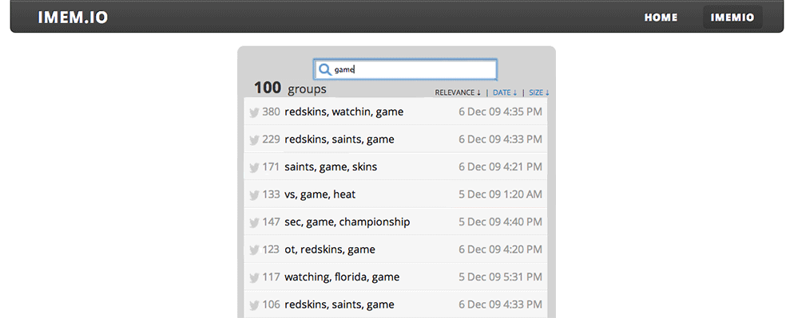
Search results are groups of Tweets based on common keywords.
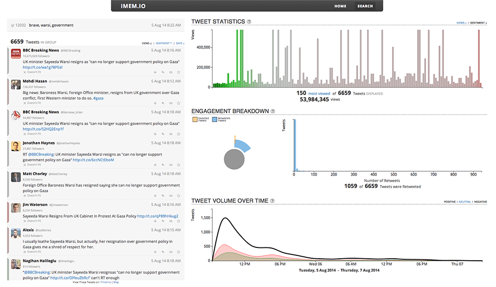
Overview of a search results.
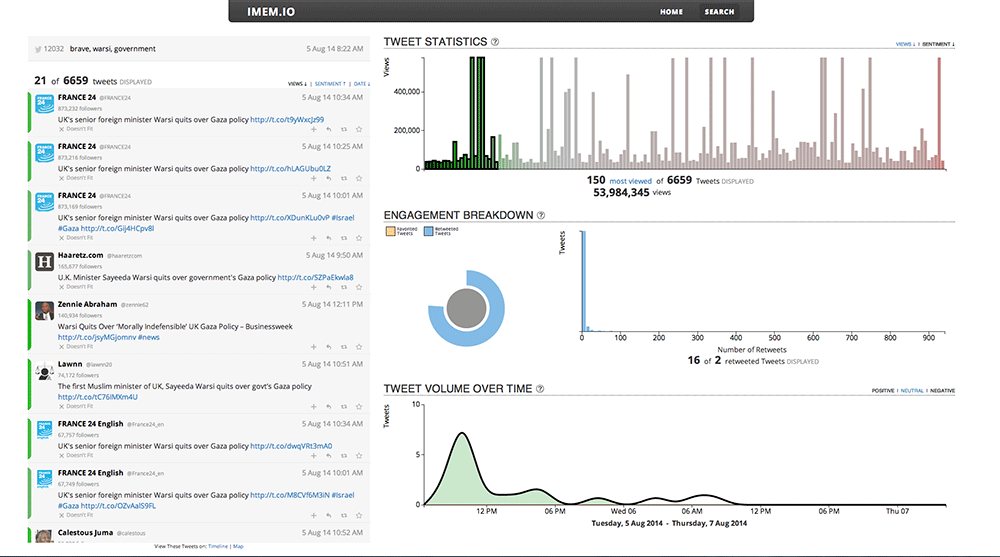
Selecting a subset of Tweets changes the visualization.
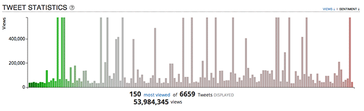
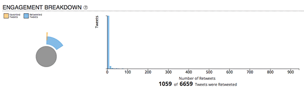
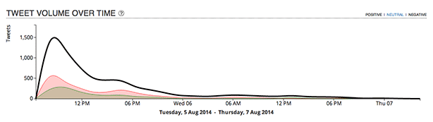
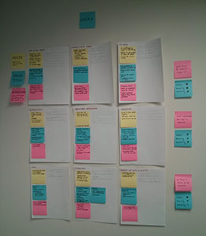
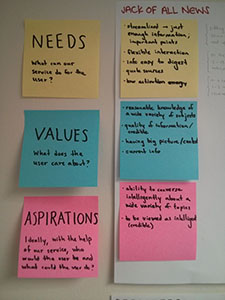
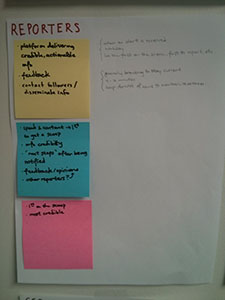
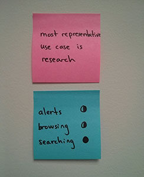
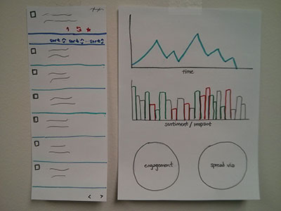
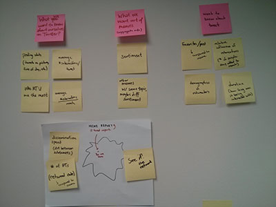